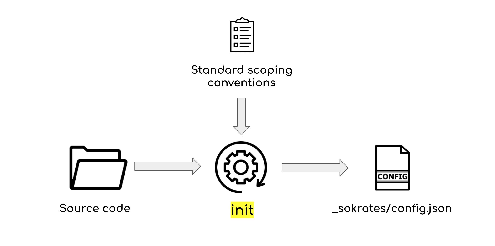

Sokrates Configuration File
Sokrates analyses take two inputs:
- the actual source code, including all folders and files, and
- a configuration file, which describes how Sokrates should view and analyze the source code.
Based on these two inputs, Sokrates produces analysis reports and data files with analysis details.
Sokrates configuration file is a JSON file. The default location of the configuration file is <your-project>/_sokrates/config.json. The example of a configuration file, you can see here .

Figure 1: The Sokrates’ configuration file describes how Sokrates should view and analyze the source code..
The configuration file has several sections, you can use to:
- describe your project with a name, logo, summary text, and to add external links
- define the scope, including the location of the source code root, file extensions and files to analyze, ignored files, files classification, defining what is main code, test code, generated code, build & deployment code, or other code…
- identify logical decompositions: one or more ways to looks at components in the system
- define concerns: aspects of a software system that cannot be cleanly decomposed from the rest of the system
- set goals and controls: define measurements and alarms to keep your system within the desired values
- provide analysis reference points: for comparison and trend analysis
- add summary findings: manually added one-line insights and notes
- perform advanced configuration: meta-rules for components, concerns and dependencies
You can find more details about the Sokrates configuration file in Appendix: Sokrates Configuration File.
Automatically Generating a Configuration File
While you can always start from scratch and write a configuration file in any text editor, the most natural way to bootstrap configuration process is by using the Sokrates’ init command. This command traverses the source code folders looking for standard conventions and populates the configuration file with all found conventions. For instance, the init command excludes binary files based on their extensions, adds ignoring rules for known third-party libraries, adds rules for the location of test code, or rules for identifying generated code.
 Figure 2: The init command generates a new configuration based on a set of standard conventions.